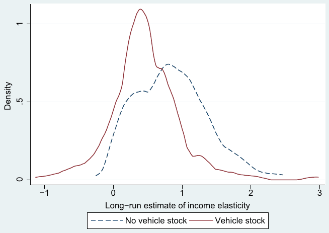
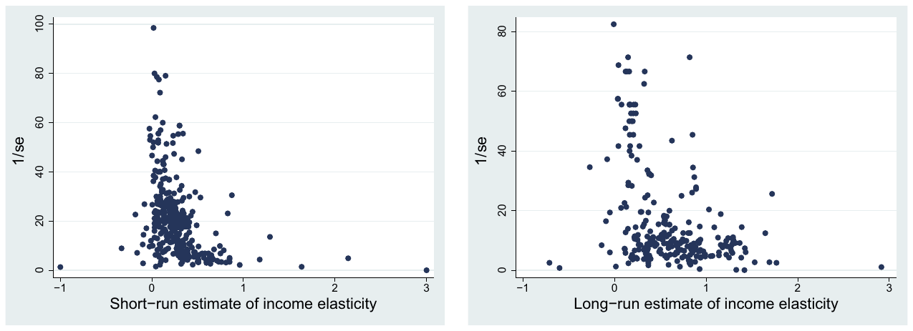
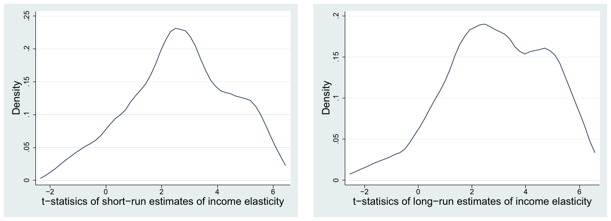

Income Elasticity of Gasoline Demand: A Meta-Analysis
Tomas Havranek and Ondrej Kokes (2015), "Income Elasticity of Gasoline Demand: A Meta-Analysis." Energy Economics 47, pp. 77-86. https://doi.org/10.1016/j.eneco.2014.11.004.
Tomas Havranek a,b,⁎, Ondrej Kokes c
a Czech National Bank, Czech Republic
b Charles University, Prague, Czech Republic
c Cambridge Econometrics, United Kingdom
☆ We are grateful to Zuzana Irsova, Karel Janda, seminar participants at Charles University, Prague, and two anonymous referees of Energy Economics for their helpful comments on previous versions of the manuscript. We thank Carol Dahl for providing us her data set with estimates of gasoline demand elasticities. We acknowledge support from the Czech Science Foundation (grant #P402/11/0948 and #15-02411S) and the Grant Agency of Charles University (grant #558713). An online appendix providing the data and the Stata code used in this paper is available at meta-analysis.cz/gasoline. The views expressed here are ours and not necessarily those of the Czech National Bank.
⁎ Corresponding author at: Czech National Bank, Czech Republic. Tel.: +64 3 364 0549; fax: +64 3 364 0545. E-mail address: tomas.havranek@ies-prague.org (T. Havranek).
JEL classification: C83, Q41
Abstract
In this paper we quantitatively synthesize empirical estimates of the income elasticity of gasoline demand reported in previous studies. The studies cover many countries and report a mean elasticity of 0.28 for the short run and 0.66 for the long run. We show, however, that these mean estimates are biased upwards because of publication bias—the tendency to suppress negative and insignificant estimates of the elasticity. We employ mixed-effects multilevel meta-regression to filter out publication bias from the literature. Our results suggest that the income elasticity of gasoline demand is on average much smaller than reported in previous surveys: the mean corrected for publication bias is 0.1 for the short run and 0.23 for the long run.
Keywords: Gasoline, Income elasticity, Publication bias, Meta-analysis
1. Introduction
The income elasticity of gasoline demand is a key parameter in energy and environmental economics. It helps us understand, among other things, how emissions of greenhouse gases stemming from the consumption of gasoline will evolve in the future as developing countries get richer. Because of its policy relevance, the elasticity has been estimated by hundreds of researchers in recent decades. Nevertheless, the extensive research has not resulted in a consensus on the magnitude of the elasticity. In this paper we synthesize the estimated income elasticities of gasoline demand and try to provide a benchmark value of the elasticity based on the available empirical literature. To this end we employ meta-analysis, the set of methods designed for quantitative literature surveys.
Meta-analysis was developed in medical science to summarize the results of clinical trials; one of the first meta-analyses was Pearson (1904). Clinical trials are costly and often can only use a handful of observations; aggregation of the results of clinical trials on the same topic increases the number of degrees of freedom and improves the robustness and precision of the resulting estimated treatment effect. In the last few decades the methods of meta-analysis have spread from medical research to other fields; for example, the first meta-analysis in economics was Stanley and Jarrell (1989). The excellent survey by Nelson and Kennedy (2009) summarizes 140 meta-analyses conducted in environmental and natural resource economics since the early 1990s. Meta-analysis, we believe, is not a substitute for good narrative literature surveys, but complements them with a formal treatment of various biases potentially present in the literature.
At least since Rosenthal (1979), researchers conducting literature surveys have been concerned with the so-called file-drawer problem, or publication bias. When some results are strongly predicted by theory, researchers may treat opposite findings with suspicion. Such results are often difficult to publish, and researchers may choose to hide those counter-intuitive findings in their file drawers. The process can be unintentional and still result in publication bias; for example, if researchers use the "correct" sign of the estimated coefficient as a model selection test. The bias is particularly serious in medical research, and the best medical journals now require registration of clinical trials as a necessary condition for submission, so that the profession knows whether results end in file drawers (Krakovsky, 2004; Stanley, 2005). A well-known case of publication bias concerns the antidepressant drug Paxil, which was originally found to be effective by most published studies. When, however, unpublished results are included, the drug does not seem to outperform a sugar pill, and may have severe side effects (Turner et al., 2008).
Motivated by the practice in medical science, the American Economic Association has been considering establishing a registry for controlled experiments because of potential publication bias (Siegfried, 2012, p. 648). But for non-experimental fields, such as the literature estimating the income elasticity of gasoline demand, meta-analysis tools remain the only way to correct for the bias. We suspect that negative estimates of the elasticity are reported less often than they should, which biases the mean estimate in the literature upwards. The reason is that negative estimates of income elasticity are counter-intuitive: it does not make much sense for gasoline demand to decrease with rising income. We expect that researchers unintentionally discard negative estimates (which imply that gasoline is an inferior good), even though they should report them from time to time because of the sampling error, especially if the true underlying elasticity is small. As discussed by Stanley and Doucouliagos (2012), such discarding of unintuitive results may paradoxically improve individual studies—it would not make much sense to build conclusions on negative estimates of the elasticity. But the literature as a whole gets biased upwards as the negative results become underrepresented.
To our knowledge, there has been one meta-analysis on the income elasticity of gasoline demand. Espey (1998) examines the heterogeneity in the estimates and reports mean elasticities of 0.47 for the short run and 0.88 for the long run, but she does not take publication bias into account. Additionally, two meta-analyses have been conducted on the price elasticity of gasoline demand: Brons et al. (2008) and Havranek et al. (2012). Similarly to Espey (1998), Brons et al. (2008) focus on the heterogeneity stemming from the different methods used by the authors estimating the elasticity, and do not control for publication bias. Havranek et al. (2012) show there is substantial publication bias in the literature on the price elasticity of gasoline demand: the mean estimate of the price elasticity seems to be exaggerated twofold because of publication selection.
We employ a large data set of gasoline demand elasticities collected and described by Dahl (2012). Because modern meta-analysis methods require information concerning the precision of the estimates of elasticities, we only use estimates for which standard errors or t-statistics are reported. The average reported elasticity for the short run is 0.28; for the long run it is 0.66. We find strong publication bias in the literature, especially for the estimates corresponding to the short run. To correct for publication bias we use mixed-effects multilevel meta-regression methods. The mixed-effects approach allows for between-study differences in the underlying elasticity, which is important because the studies in the data set estimate the elasticity for different countries. The method also assigns each study approximately the same weight, which is desirable because otherwise studies reporting many estimates would dominate the meta-analysis. Our results suggest that the corrected income elasticity of gasoline demand is, on average, only 0.1 for the short run and 0.23 for the long run. For the short run, for example, this is one-fifth the size of the number reported by the previous meta-analysis of Espey (1998); the difference is in part due to newer data and in part due to the correction for publication bias.
The remainder of the paper is structured as follows. In Section 2 we outline the basic models used for the estimation of the income elasticity of gasoline demand. In Section 3 we describe the meta-analysis techniques that we employ in this paper. Section 4 presents the results of our meta-analysis. Section 6 concludes the paper. The data and Stata code used for the estimation are available in an online appendix at meta-analysis.cz/gasoline.
2. Estimating the elasticity
In this section we briefly outline the econometric methods used for the estimation of gasoline demand elasticities. Energy demand exhibits unique features that do not allow researchers to treat it in the same way as demand for other consumer products. The main problem is that consumers do not demand energy directly; they demand transportation for which gasoline serves as an input, so researchers often work with demand for gasoline in the same way as with derived demand. While gasoline is a non-durable good, the dependence on durable goods complicates estimation. For example, as people demand certain amounts of travel, their gasoline consumption depends on the efficiency and price of vehicles. Over the last 40 years many potential approaches for the estimation of demand elasticities have been suggested, but no consensus on the best practice has been reached in the literature, as different researchers prefer different methodologies.
2.1. Static models
The models discussed over the decades have one thing in common—gasoline demand is modeled as a function of the price of gasoline and real income. Other explanatory variables may include the stock of vehicles, average vehicle efficiency, and prices of other inputs. The main difference between the models used in the literature is the way how the adjustment of gasoline demand to shocks in prices and income is laid out in time.
The so-called static models do not consider short-run adjustment, but only focus on the overall response in the long run. Dahl (2012) notes, however, that results from static models could be treated as estimates for the "intermediate run" because they often yield lower estimates compared with dynamic models. The benchmark static model can be specified as follows:
where represents gasoline demanded, per capita income, real prices, and other relevant explanatory variables, while the betas denote the corresponding elasticities. When estimating these types of regressions, of course, researchers have to make sure that the time series entering the model are stationary.
2.2. Dynamic models
The class of dynamic models, described in detail by Kennedy (1974) and Houthakker et al. (1974), assumes different consumer adaptation for the short run and long run. The demand function takes the following general form:
Given that the desired level in the short run may not match the actual demand for gasoline, demand adjusts over time toward the long-run level:
After substituting Eq. (2) into Eq. (3), taking the logarithm of both sides of the equation, and adding a disturbance term, we arrive at
The regression coefficients corresponding to and in Eq. (4) denote the short-run estimates of the income and price elasticities, respectively. Dividing them by , thus obtaining and , we get the long-run estimates. Such an elegant combination of short- and long-run elasticities within one equation has made this model very popular.
2.3. Error correction models
The error correction model (ECM) due to Engle and Granger (1987) is frequently employed in estimations of gasoline demand elasticities. In contrast to the basic dynamic approach, ECM is theory-driven: the rationale behind the model is that whenever consumers are not in equilibrium, they will try to get back to the equilibrium in the following period. The ECM is specified as follows:
where , , and are selected so that reflects white noise, and are the residuals from a cointegration equation. Thanks to the fact that all , , and are usually integrated of order one, their first differences are stationary, and the lagged residuals from the cointegration equation are stationary as well. Therefore the whole model involves only stationary variables, and its disturbances are white noise. In this setting the first-differenced lags of the response variables in question capture the short-run elasticity. The coefficients on income elasticities and their standard errors from static, dynamic, and ECM models constitute the basis of the data set we use in this meta-analysis.
3. Meta-analysis methodology
In this section we only describe the tools used in our paper; for a more detailed overview of contemporary methods in meta-analysis we refer the reader to Nelson and Kennedy (2009) and Stanley and Doucouliagos (2012). Examples of the application of meta-analysis in energy economics include, among others, Espey and Espey (2004) and Havranek et al. (2012). The original idea behind meta-analysis in economics is to explore and identify factors that drive research results. After gathering as many studies on the same topic as possible, various pieces of information about each estimate are collected. These potential meta-regression variables may include the sample size, standard errors, econometric methods used for estimation, data characteristics, model specification, and other characteristics of study design. The meta-analysis approach aims to provide a structural discussion of heterogeneity and various biases present in the literature.
Apart from the method characteristics that influence the results, there is another factor that can systematically affect the outcome—the researchers themselves. If a result is not in line with the theory or previous results, the researcher may choose to discard the finding, thus giving rise to publication selection bias (in a survey among the members of the European Economic Association, a third of economists confess that they have engaged in selective reporting; Necker, 2014). A related practice is to keep modifying the specification or data until the results are consistent with the expected outcomes. Because many researchers find insignificant estimates difficult to publish, failure to obtain statistical significance at conventional levels may result in a specification search as well. All of these effects need to be measured and accounted for, as they can bias our inference from the literature.
3.1. Graphical approach
Before testing for publication bias using econometric methods, a simple visualization of the estimates is often useful. While this approach is less objective and informative in the sense of finding the underlying value of the elasticity, it helps us obtain an overall picture concerning the various biases potentially present in the literature. The so-called funnel plot, explained in detail by Stanley and Doucouliagos (2010), shows individual estimates of the income elasticity on the horizontal axis along with a measure of precision, the inverted standard error of the estimate, on the vertical axis. The basic idea is that the most precise estimates—those with the narrowest confidence intervals—will show up at the top of the funnel, while the less precise estimates will get more dispersed, forming a symmetrical inverted funnel.
The problem is that in practice the plot often does not resemble a funnel, because estimates with some particular properties are systematically underrepresented in the literature. One of the reasons for this frequent finding could be that estimates that are inconsistent with the theory are discarded; this may be true especially if the underlying value of the parameter is close to zero, and insignificant or counterintuitive results are thus frequently obtained. Any form of funnel asymmetry suggests a bias in the literature, usually interpreted as publication selection bias.1 The symmetry of the funnel plot in the absence of publication bias results from the assumptions that researchers make when they estimate the income elasticity of gasoline. They report t-statistics for their point estimates, which implies that the estimates and their standard errors should be independent and the elasticities should be approximately normally distributed around the mean underlying value (Stanley and Doucouliagos, 2012).
3.2. Econometric models
The intention to explain the variation in the reported elasticities using the characteristics of individual studies leads us to the following equation, first suggested by Stanley and Jarrell (1989). The estimate of the elasticity is the dependent variable, assumed to be influenced by various factors and the mean underlying value of the elasticity, :
The variables may include information about model specification, publication outlet, number of observations, and other statistics. As we will see later, this simple model can be extended and adjusted for various innovations in meta-analysis methodology that have occurred since the early 1990s.
When we investigate publication bias using econometric methods, we are essentially testing the asymmetry of the funnel plot. Building on the potential asymmetry, we can model publication bias in the following way:
where the estimate depends not only on the characteristics included in Eq. (6), but also on its standard error . In this specification, measures the degree of publication bias (Stanley, 2005). The intuition for the model in the context of gasoline demand elasticities is explained in detail by Havranek et al. (2012).
Given the nature of the data, the disturbance term is unlikely to be homoskedastic (one of the independent variables is directly related to the variance of the dependent variable). To achieve efficient estimates, Stanley (2008) suggests to employ weighted least squares instead, dividing the equation by the standard error of the estimate. The response variable changes to the t-statistic, and we obtain the following specification:
Note that estimating Eq. (8) is equivalent to running a weighted-least-squares routine on Eq. (7) with the inverse of the estimates' variance taken as the weight. In this model the publication bias is treated as a constant throughout the sample, but the constant can be decomposed using additional moderator variables, :
This equation constitutes a rich model allowing for the examination of heterogeneity in both the underlying value of the elasticity and publication bias. For more precise estimation of the underlying elasticity beyond publication bias, Stanley and Doucouliagos (2007) argue that since the effect of standard errors is nonlinear, it is better to model the asymmetry in the following way (once again after dividing by standard errors):
Estimates from the same study often share the same qualities in terms of estimation methods, data, and priors of the researcher. This can, and often will, result in correlation of the estimates. The problem becomes even more pronounced as the number of estimates per study increases. In a survey of meta-analyses, Nelson and Kennedy (2009) report this number to equal three on average; in our case it is eight for both the short- and long-run estimates. As a remedy for the problems caused by within-study correlation, Nelson and Kennedy (2009) suggest that researchers use the mixed-effects multilevel model, which has been employed by many studies (for instance, Doucouliagos and Stanley, 2009). In this setting we add a random effect for each study, obtaining a composite error term capturing also the estimate-level disturbance. If the within-study correlation is large, the estimation gives less weight to elasticities coming from studies that report many results, so that all studies have approximately the same weight (Havranek and Irsova, 2011, 2012). If the correlation is small, the estimation approaches ordinary least squares. Extending Eqs. (9) and (10), respectively, we obtain
In the final specification the quadratic effect of publication bias is reflected by the estimate of , and denotes the underlying population value. The regression parameters and represent the effect of variables on the size of the elasticity and publication bias, respectively. The disturbance term is split into a study-level error and an estimate-level error .
4. Measuring publication bias
With so much research interest in energy demand, various surveys and analyses of the literature on this topic have emerged early on; non-econometric surveys include Dahl and Sterner (1991), Graham and Glaister (2002), and Dahl (2012). These papers stress the importance of model specification and stratify the studies by their choice of explanatory variables or lag structures. The following statement by Dahl and Sterner (1991, p. 203), reflects the typical findings of the surveys: "[…] by a careful comparison we find that if properly stratified, compared and interpreted, different models and data types do tend to produce a reasonable degree of consistency."
To provide more systematic and formal reviews of the literature, several meta-analyses of gasoline demand elasticities have been performed: Espey (1998), Brons et al. (2008), and Havranek et al. (2012). These studies differ in various ways, including the choice of data, econometric tool set, and treatment of publication bias. Only Espey (1998) focuses on income elasticity, reporting an average of 0.47 for the short run and 0.88 for the long run, with medians lying close to these values: 0.39 and 0.81.2 The basic properties of the three meta-analyses are summarized in Table 1. None of the previous surveys or meta-analyses on the income elasticity corrected the literature for publication bias; such treatment can only be found in Havranek et al. (2012), who focus on the price elasticity. That study was, to our knowledge, the first one to discuss the problem of publication bias in gasoline demand research.
| Espey (1998) | Brons et al. (2008) | Havranek et al. (2012) | |
|---|---|---|---|
| No. of studies | 101 | 43 | 41 |
| Time span | 1966–1997 | 1974–1999 | 1974–2011 |
| No. of estimates | LR price 277, LR income 245, SR price 363, SR income 345 | SR price 191, LR price 79 | SR price 110, LR price 92 |
| Approach | OLS | Seemingly unrelated regressions | Mixed-effects, clustered OLS |
LR and SR stand for long run and short run, respectively.
4.1. Data set
The starting point of most meta-analyses, including the three mentioned above, is the selection of studies to be included (see, for example, the guidelines for conducting meta-analyses in economics, Stanley et al., 2013). In contrast, we use the database developed by Dahl (2012), which makes our task easier. We have three reasons for choosing this data set. First, in her recent survey, Dahl (2012) describes the summary statistics of gasoline demand elasticities, but does not conduct a meta-analysis. Most meta-analysts have to collect their own data sets because no usable data exist on the topic (in the case of a new meta-analysis) or the existing data have already been used in previous meta-analyses (in the case of a meta-analysis that updates the results of previous work). The data set that we use provides detailed information not only on the elasticities and their standard errors but also on the characteristics of the data and methodology used in the primary studies, and is coded by an expert in the field of energy economics, which allows for a full-scale meta-analysis. Second, the Dahl (2012) survey is authoritative, having received 50 citations in Google Scholar in the two years following its publication. Apart from the database of gasoline demand elasticities, Carol Dahl also provides data on the demand for diesel and electricity; all of the data sets are freely available and documented on her website. Third, in this paper we focus on publication bias, and believe it adds to the persuasiveness of our conclusions when we use data collected for a different purpose by an expert in the field—in this way we do not introduce any potential bias ourselves by selectively picking studies for inclusion in the meta-analysis.
The database of Dahl (2012) contains estimates of gasoline demand elasticities taken from 240 papers, which is substantially more than what was used by the three existing meta-analyses on the topic: in total they collected 150 unique studies. To put these numbers into perspective, we refer to Nelson and Kennedy (2009), who surveys 140 meta-analyses in energy and environmental economics and notes that the median number of studies used in a meta-analysis is 33. Dahl (2012) collects all available estimates of the elasticities in the spirit of "better err on the side of inclusion" (Stanley, 2001) and does not exclude, for example, results presented in unpublished papers, which have typically been excluded in previous meta-analyses of energy demand elasticities (for instance, in Stanley, 2001). The data set provides plenty of information on data and methodology employed in primary studies, but since it was not designed for a meta-analysis, it does not explicitly code variables that could be used in the meta-regression framework. We create these variables by coding different features of study design and provide the adjusted data set in the online appendix at meta-analysis.cz/gasoline; the original data set can be found at the website of Carol Dahl (Dahl, 2010).

As will be shown in the next section, the control for vehicle stock is by far the most important aspect of study design that influences the magnitude of the reported elasticities; the difference is apparent at first sight from Fig. 1. For this reason we analyze separately the sub-samples of estimates derived with and without taking into account vehicle stock information. As vehicle stock adjustment forms a major part of the effect of shocks to income, the estimates derived when taking vehicle stock into account present the long-run income elasticity beyond vehicle stock adjustment. The other estimates reflect the total adjustment to income changes. Even though some surveys and analyses point to this discrepancy (Dahl and Sterner, 1991; Dahl, 2012; Espey, 1998), primary studies rarely acknowledge the problem. In our meta-analysis we prefer the results that correspond to estimates from models that include this important control variable.
4.2. Graphical methods
Prior to the econometric analysis itself, we inspect the data set using several graphical methods. We have noted that we expect publication bias to occur in the literature on gasoline demand elasticities, and there appear to be multiple indicators of the bias visible from the graphs. First, as we see from Fig. 2, the funnel plots for this literature are heavily skewed. The left-hand part of the graph is almost completely missing in the funnel for short-run estimates, suggesting publication bias toward positive results, which are more consistent with the theory. The second funnel with long-run estimates is likewise skewed and shows two spikes (the values with the highest precision denoting the underlying value of the elasticity beyond publication bias), one for models with vehicle stock information, and the other for models disregarding vehicle stock information. This finding represents another reason for separating these two sub-samples of estimates.
The asymmetry of the reported results causes simple estimators, such as the arithmetic mean and the median, to yield biased estimates. In our case these estimators will be biased upwards, as negative estimates of the short-run effect and insignificant positive estimates of the long-run effect are reported less often than they should be. Second, the densities of the t-statistics of our estimates, depicted in Fig. 3, exhibit a sharp increase around the value of 2. That roughly corresponds to a 5% significance level in a two-tail t-test for positive estimates—if researchers strive for statistical significance, they need t-statistics around two, and the evidence shown in Fig. 3 is thus consistent with the presence of publication selection in the literature.
As Stanley et al. (2010) suggest, a quick way to test for potential publication bias is to take estimates with the highest inverted standard errors; that is, those at the top of the funnel (usually 10% of the whole sample), and compute their mean. These points should represent the most precise estimates, thus their average should be close to the population value. Computing a weighted average for each sub-sample, we arrive at 0.138, 0.329, and 0.636, respectively, for short-run, long-run with vehicle stock, and long-run without vehicle stock information. These values are lower than the means and medians reported in Table 2. All these tests suggest that the samples are skewed and reporting means or medians is not sufficient when looking for the underlying value of the elasticity.


4.3. Meta-regression results
As the first econometric model we use the simplified funnel asymmetry test; then we apply an extended model with moderator variables coded from the data set developed by Dahl (2012). The funnel asymmetry test only requires t-statistics, the estimates themselves, and stratification by studies, because we use the mixed-effects multilevel framework. Concerning the extended model, we need to code additional variables reflecting data, methods, and publication characteristics of primary studies; we will discuss these issues in the next section.
Table 3 presents the results of the basic funnel asymmetry test. The value of within-study correlation is large in all cases, and likelihood-ratio tests suggest that we cannot ignore it and use simple OLS. The extent of publication bias represented by the constant term is statistically significant at the 10% level for all models. Thus, our impression based on the previously reported funnel plots is corroborated by formal econometric methods: negative and insignificant estimates of the income elasticity of gasoline demand tend to be reported less often than they should.
| Short-run | Long-run | ||
|---|---|---|---|
| Whole sample | Vehicle stock | No vehicle stock | |
| 1/se | 0.0837*** (10.06) | 0.209*** (7.71) | 0.592*** (15.50) |
| Constant | 2.997*** (7.97) | 1.573** (1.97) | 3.032* (1.77) |
| Observations | 831 | 346 | 346 |
Response variable: t-statistic of the estimate of elasticity. t-statistics in parentheses. p < .1. p < .05. p < .01.
To allow judgment concerning the extent of publication bias, Doucouliagos and Stanley (2013) run Monte Carlo simulations and construct thresholds for the value of the constant in the funnel asymmetry test. By using their terminology, our short-run sample and long-run sample without vehicle stock samples exhibit "severe" publication bias, while the long-run sample with vehicle stock sample contains a "substantial" amount of bias. To estimate the true underlying effect beyond publication bias, we employ Heckman meta-regression with a quadratic relationship between the estimates of the elasticities and their standard errors; the results are summarized in Table 4. As expected, all estimates of the underlying value of the elasticity (the coefficient for 1/se) are larger than zero at the 1% level of significance: 0.0999 for the short run, 0.234 for the long run with vehicle stock, and 0.644 for the long run without vehicle stock.
| Obs. | Mean | Median | Std. dev. | Min. | Max. | |
|---|---|---|---|---|---|---|
| Short run | 831 | 0.284 | 0.250 | 0.326 | −1.17 | 3 |
| Long run, vehicle stock | 346 | 0.465 | 0.395 | 0.509 | −1.13 | 2.98 |
| Long run, no vehicle stock | 346 | 0.861 | 0.838 | 0.519 | −.256 | 2.466 |
Table 5 offers a comparison of our preferred regression results with respect to several widely used metrics. The weighted mean in the table is a result of the mixed-effects model without taking publication bias into account. Looking at the discrepancy between the values, we can see that classical tools that ignore publication selection bias overstate the true underlying elasticity. This overestimation substantially affects our inference based on these metrics. For example, Dahl (2012) also comments on the differences between estimates of the long-run income elasticity computed with and without vehicle stock information. While we found the estimates controlling for vehicle stock to provide estimates of about a third of the size of the estimates without vehicle stock, Dahl (2012), using the same data set, found it to be one half.
| Short-run | Long-run | ||
|---|---|---|---|
| Whole sample | Vehicle stock | No vehicle stock | |
| 1/se | 0.0999*** (12.47) | 0.234*** (9.76) | 0.644*** (17.38) |
| se | −0.140 (−1.24) | −0.0501 (−0.11) | 0.965*** (2.73) |
| Observations | 831 | 346 | 346 |
Response variable: t-statistic of the estimate of elasticity. t-statistics in parentheses. p < .01
| Short-run Whole sample | Long-run Whole sample | Long-run Vehicle stock | Long-run No vehicle stock | |
|---|---|---|---|---|
| Preferred estimate | 0.0999 | 0.457 | 0.234 | 0.644 |
| Sample mean | 0.284 | 0.663 | 0.465 | 0.861 |
| Weighted mean | 0.349 | 0.614 | 0.424 | 0.857 |
Comparing our meta-regression results with the only meta-analysis conducted on the income elasticity of gasoline demand (Espey, 1998), we find her mean estimates—0.47 and 0.88 for short- and long-run elasticity, respectively—to be much closer to the sample averages than the final estimates from our analysis after correction for publication bias. The difference is due to the treatment of publication bias, but also to the fact that (Espey, 1998), included estimates with unknown time structure into both the short- and long-run samples. She also truncated her data set by removing any negative estimates as inconsistent with the theory, thus aggravating the publication selectivity problem in the literature.3 As we have mentioned, while it makes sense at the level of individual studies to put more weight on intuitive estimates, discarding unintuitive estimates at the macro level is likely to create a bias. Negative estimates of the income elasticity probably often arise because of imprecise estimation, but when we omit those and keep the very large estimates (that are also due to imprecision), our sample mean gets biased upwards.
5. Augmented meta-regression
In the next step we estimate the augmented meta-regression model presented in Eq. (11) for the estimates of the long-run income elasticity of gasoline demand. The specification is based on the weighted-least-squares version of the funnel asymmetry test presented in the last section, but also includes other variables that we think may help explain differences in the reported estimates of the elasticity. We consider four groups of variables: data characteristics (6 variables), type of methodology (8 variables), geographical coverage (8 variables), and publication characteristics (2 variables).
Concerning data characteristics, we control for the mean year of the data used in the estimation of the elasticity. Before using the variable in our analysis, we subtract the minimum value (1946.5), so that the transformed variable has a minimum of zero, which makes interpretation easier. If there is a linear time trend in the income elasticity of gasoline demand, it will be captured by this variable. Next, we add the length of the time span of the data: the number of years included in the analysis; we use the logarithmic transformation in this case, because we do not expect the effect to be linear. We believe that statistical significance of the length of the time span would imply that small-sample biases in the literature are important. Additionally we create two dummy variables that reflect the data frequency used by the authors of primary studies. While most authors rely on annual data, some use quarterly or even monthly time series. There is little consensus in the literature on which frequency is the most appropriate; in principle, however, the optimal data sampling frequency used by the econometrician should reflect the decision frequency of consumers. Next, the models employed to estimate the elasticity rely on time series, cross-sectional, or panel data. We add dummy variables that equal one if time series or cross-sectional data are used, respectively, leaving panel studies as the reference case. We believe that the use of panel data is preferred because they allow the researcher to filter out the effects of individual cross-sectional units and also provide more opportunities to tackle endogeneity in gasoline demand.
Concerning methodology, we have noted that an important feature of the estimation of long-run elasticities is whether the model controls for vehicle stock. If the control variable is omitted, the estimated elasticity reflects changes in gasoline consumption given by both the use of the existing vehicles and changes in the stock of vehicles. The analysis presented so far suggests that estimates omitting vehicle stock information are substantially larger than those that control for vehicle stock. Another important difference in the estimation of the elasticity is the dynamics of the model: static models have often been referred to in the literature as covering the "intermediate run" (Dahl, 2012), so we expect them to yield smaller estimates of the elasticity on average. The models can be estimated by various econometric techniques, and we create dummy variables that equal one if the following methods are used: ordinary least squares (OLS), any type of instrumental variable estimation (IV), seemingly unrelated regressions (SUR), techniques based on maximum likelihood (ML), any type of error correction models (ECM), and generalized least squares (GLS). Other models are the reference category, usually represented by idiosyncratic choices by individual researches that cannot be coded and analyzed in the meta-analysis framework: for instance, various non-parametric estimations and weighted combinations of different approaches.
To examine cross-country differences in the income elasticity of gasoline demand, we include 8 dummy variables that reflect the country for which the elasticity was estimated. The data set covers dozens of countries, but for most of them only a few estimates are available, so we focus on the ones most frequently examined in the literature: Australia, Canada, France, Germany, Japan, Sweden, and the USA. The eighth dummy variable equals one when the estimate corresponds to a developing country; the reference category is estimation for the OECD countries, either as a group or for individual members other than the seven listed above. Finally, we include the year when the study was published and a dummy variable that equals one for studies published in peer-reviewed journals. We expect that these publication characteristics are related to publication bias and not to the underlying value of the elasticity, so, unlike all the other variables, we do not divide the publication characteristics by the standard error. In other words, publication characteristics constitute the variables in Eq. (11) described in Section 3. The distinction between variables that affect the underlying elasticity and those that affect publication bias follows Stanley et al. (2008).
The results of the augmented meta-regression are reported in Table 6. There are three specifications: the first specification only includes data and method characteristics, the second specification adds region dummies, and the full model presented in the third specification also includes publication characteristics.4 We see that all specifications yield statistically significant estimates of publication bias (the constant at the bottom of the table), which corroborates the evidence reported earlier in the last section. Strictly speaking, to evaluate publication bias in the third specification we have to examine the joint significance of the intercept and publication characteristics, and the three variables are marginally statistically significant at the 10% level. While we control for 24 variables, there are other aspects of study design that, while difficult to code, may also affect the estimates of the elasticity. If we fail to control for the aspects of methodology that influence both the point estimates of the elasticity and the standard errors in the same direction, our results concerning publication bias may be biased. For this reason we also tried to estimate an instrumental variable meta-regression with the number of observations taken as the instrument for the standard error. The estimation is imprecise and we do not report it here, but it also yields a statistically significant estimate of publication bias. Concerning the underlying elasticity beyond publication bias, in the augmented meta-regression it is not enough to look at the coefficient estimated for precision: because other variables are divided by the standard error as well, the coefficient on precision reflects the value of the elasticity conditional on the values of the remaining variables.
| (1) | (2) | (3) | |
|---|---|---|---|
| 1/se | 0.257 (1.39) | 0.892*** (4.67) | 0.827*** (4.17) |
| Mean year of data | 0.000947 (0.32) | −0.00216 (−0.77) | −0.000556 (−0.18) |
| Time span | 0.335*** (7.61) | 0.168*** (3.31) | 0.174*** (3.39) |
| Quarterly data | −0.285*** (−2.74) | −0.0412 (−0.43) | −0.0476 (−0.50) |
| Monthly data | 0.269* (1.83) | −0.258 (−1.19) | −0.263 (−1.22) |
| Cross-section | 0.279** (2.57) | 0.0784 (0.73) | 0.0863 (0.81) |
| Time series | −0.133*** (−2.75) | −0.150*** (−2.82) | −0.151*** (−2.84) |
| Vehicle stock | −0.860*** (−20.47) | −0.782*** (−20.10) | −0.773*** (−19.86) |
| Static model | −0.155** (−2.50) | 0.0555 (0.96) | 0.0574 (0.99) |
| OLS | −0.0337 (−0.67) | −0.0224 (−0.49) | −0.0235 (−0.52) |
| IV | −0.449** (−2.31) | 0.132 (0.74) | 0.145 (0.82) |
| SUR | 0.166* (1.85) | −0.0796 (−0.96) | −0.0783 (−0.95) |
| ML | −0.159 (−0.32) | −0.435 (−0.98) | −0.436 (−0.99) |
| ECM | 0.226*** (2.77) | 0.381*** (4.77) | 0.379*** (4.76) |
| GLS | −0.137** (−2.15) | 0.0254 (0.38) | 0.0324 (0.48) |
| Developing countries | −0.267*** (−4.58) | −0.259*** (−4.44) | |
| Australia | −0.428*** (−4.21) | −0.424*** (−4.20) | |
| Canada | −0.822*** (−11.73) | −0.821*** (−11.73) | |
| France | −0.0520 (−0.62) | −0.0486 (−0.58) | |
| Germany | 0.122 (0.67) | 0.123 (0.68) | |
| Japan | −0.217** (−2.44) | −0.208** (−2.33) | |
| Sweden | 0.0500 (0.29) | 0.0551 (0.32) | |
| USA | −0.634*** (−9.44) | −0.635*** (−9.47) | |
| Published | −1.184 (−0.77) | ||
| Publication year | −0.124 (−1.27) | ||
| Constant | 2.534** (2.48) | 1.690** (1.96) | 4.937** (2.19) |
| Observations | 692 | 692 | 692 |
Response variable: t-statistic of the estimate of elasticity. All variables expect those in italics are divided by the standard error; t-statistics in parentheses. * p < 0.10. ** p < 0.05. *** p < 0.01.
Our results for the individual moderator variables suggest that approximately a third of the variables appear to be systematically important for the explanation of the differences in the reported estimates of the elasticity. The mean year of the data period is not statistically significant in any specification: we find no evidence that the elasticity would systematically change in time. In contrast, the time span of the data matters for the resulting elasticity, with studies covering longer time periods typically obtaining larger elasticities. One explanation for this finding is the potential small-sample bias. With short time series, and especially cross-sectional studies that only cover one year of data, the researcher might not be able to observe the full effect of the adjustment of consumers to changes in income. Next, our results indicate that the sampling frequency of the data used by the econometrician does not matter much for the resulting elasticity; the coefficient loses any statistical significance when controls for regional heterogeneity are added to the regression.
We also find that studies that use time series data—that is, those that do not exploit the cross-sectional dimension—tend to report smaller estimates of the elasticity. This result points to a bias resulting from the inability to control for idiosyncratic effects by using fixed effects, for example. Next, as we have expected, the inclusion of a control for vehicle stock has a dramatic effect on the resulting elasticity: studies that omit vehicle stock information report elasticities larger by approximately 0.8. In contrast, static models do not seem to yield significantly different results from dynamic models once other aspects of data and methodology are taken into account. Nevertheless, this result may be due to the correlation between our dummy variable for static models and the use of ECM as the estimation technique: ECM, used for dynamic models, tends to yield substantially larger elasticities (by 0.2–0.4). The other aspects of estimation methodology do not bring systematically different results.
Concerning the estimates of the elasticity for different regions, we find a large degree of heterogeneity. Developing countries tend to display smaller elasticities compared to OECD countries, which contrasts with the results of Dahl (2012). We believe that the difference is driven by the fact that we control for the characteristics of data and methodology. Especially important is the control for the inclusion of vehicle stock information: because markets in developing countries are much less saturated by vehicles, a large part of the response to changes in income may show as a change in the number of vehicles; the argument is consistent with the results presented by Storchmann (2005). But even for developed countries we find substantial differences. Specifically, the elasticities are smaller in Australia, Canada, and the USA than in France, Germany, and Sweden. While entirely consistent with the findings of the earlier meta-analysis presented by Espey (1998), this result is puzzling. In European countries the use of public transportation is generally widespread among all income groups, and one would therefore expect gasoline demand to be less responsive to changes in income.
We find no evidence that publication bias is correlated with publication in a peer-reviewed journal or the year of publication. In other words, publication bias in this literature seems to be driven by self-censorship of authors, not by the pressure from editors or referees. The authors seem to use the sign and significance of the elasticity as a specification check; if the estimate of the income elasticity is insignificant or negative, they are more likely to discard the model and try a new specification. The insignificance of the year of publication shows no trend in publication bias and thus no support for the so-called economics research cycle hypothesis (Goldfarb, 1995), which states that the reported t-statistics increase initially to confirm the original findings of the literature, but eventually more skeptical results become preferred. The intuition for a positive income elasticity is very strong, and so researchers think that results showing the opposite are difficult to publish.
Now we turn to evaluating the magnitude of the underlying elasticity beyond publication bias. We have noted that the value is conditional on the other variables included in the regression, so we need to choose our preferred values for each of the variables. Such "best-practice" estimation is inevitably subjective, because different researchers have different opinions on what the most suitable estimation technique is, for example. We prefer if the study uses new data: that is, we plug in the sample maximum for the mean year of data to the full model in the third specification of Table 6. We also prefer the maximum time span available to studies. We prefer monthly frequency of data, because we believe that it is closer to the actual decision frequency than the use of quarterly and annual data. For reasons outlined in the paragraphs above we prefer panel data to cross-section and time series approaches. We prefer if the model controls for vehicle stock: as the markets over the world gradually saturate with vehicles, what matters for the response of gasoline consumption to shocks to income will be the change in the use of vehicles, not their number. We prefer dynamic models, because they allow for a more structured analysis of the adjustment process in gasoline consumption. Finally, we prefer when instrumental variables are used to tackle at least some of the endogeneity issues involved in the estimation of the elasticity.
The resulting estimate of the long-run income elasticity of gasoline demand conditional on our definition of best practice is 0.37 (the 95% confidence interval is [− 0.18, 0.92]) for OECD countries and 0.11 (−0.44, 0.67) for developing countries. The estimates, while quite imprecise, are consistent with our corrected mean for all elasticities computed with control for vehicle stock presented in the last section, 0.23, which covers both developed and developing countries. This similarity suggests that while some aspects of data and methodology are important, taken together they have a rather neutral effect on the elasticity. The result, obviously, depends on the definition of best practice.
6. Concluding remarks
In this paper we present a meta-analysis of the income elasticity of the demand for gasoline. We use the large data set of elasticities collected by Dahl (2012) and employ multilevel mixed-effects meta-regression methods to filter out publication bias from the literature. Our results suggest that publication bias is substantial, especially for the estimates of short-run elasticities, and the corrected mean elasticity seems to be much smaller than commonly assumed. When publication bias is filtered out from the literature, the mean reported short-run elasticity is only 0.1, which is one-fifth the size of what Espey (1998) found in her meta-analysis. The long-run estimate corrected for publication bias is 0.23, about one-fourth the size of the estimate reported by Espey (1998).
The test for publication bias that we employ relies on the assumptions that researchers make when estimating the elasticity. Since they report t-statistics or symmetrical standard errors for their estimates, the estimates and their standard errors should not be correlated. Nevertheless, in the data set of gasoline income elasticities these two statistics are strongly correlated, which suggests a bias. This correlation has two possible sources. First, researchers may require statistically significant results, which means that they need large estimates of elasticity to offset standard errors. Second, researchers may discard negative estimates of the elasticity because such results are counter-intuitive: negative estimates suggest that the demand for gasoline decreases when people get richer.
All in all, our results indicate that the worldwide demand for gasoline is almost insensitive to changes in income in the short run and relatively insensitive to income in the long run. Compared to the previous surveys of the income elasticities presented in the literature (Espey, 1998; Dahl, 2012), our findings suggest, at the micro level, even stronger regressivity of gasoline taxes than commonly thought and, at the macro level, a lower trajectory of future gasoline consumption as countries get richer. Concerning the former, our results highlight the potential distributional problems of climate mitigation and air quality control policies. Concerning the latter, because gasoline consumption represents an important source of air pollutants and greenhouse gases, our results are consistent with a flatter environmental Kuznets curve in the future. This implication is supported by the fact that when data and method aspects employed by the authors of primary studies are controlled for, we do not find larger income elasticities for developing countries compared with the OECD countries. In contrast, when control for vehicle stock is taken into account, developing countries display somewhat smaller income elasticities on average.
Our results also have implications for models evaluating the social costs of carbon emissions, in which lower sensitivity of gasoline consumption to income may give support to economic scenarios featuring modest increases in emissions even when income is projected to grow fast. Despite this optimistic corollary, however, our results do not necessarily imply smaller social costs of carbon.
ENDNOTES
- Nevertheless, the asymmetry can also be driven by small-sample or other biases. In any case, meta-analysts should correct for the bias, however it is called, by giving more weight to more precise estimates.
- Additionally, Espey (1996) examines the sub-sample of the data set of elasticities estimated for the USA.
- Nevertheless, it is worth noting that Espey (1998) focuses on explaining the heterogeneity in the estimates, not on the mean value of the elasticity.
- Many meta-analysts use the general-to-specific approach and exclude the insignificant variables one by one. Irsova and Havranek (2013) discuss the statistical validity of this approach and argue that Bayesian model averaging is more appropriate to address model uncertainty. In this paper we do not tackle model uncertainty specifically because the number of explanatory variables in the meta-regression is not that large, but note that applying the general-to-specific approach would not change our conclusions.
REFERENCES
Some entries below were printed without a link. Where a Crossref record matches one and no other record plausibly could, its DOI is shown; ambiguous references are left as they were printed.
- Brons, M., Nijkamp, P., Pels, E., Rietveld, P., 2008. A meta-analysis of the price elasticity of gasoline demand. A SUR approach. Energy Econ. 30 (5), 2105–2122. 10.1016/j.eneco.2007.08.004
- Dahl, C.A., 2010. DEDD-G2010.xls. Dahl Energy Demand Database (http://dahl.mines.edu/courses/dahl/dedd. [Online; accessed 2-January-2012]).
- Dahl, C.A., 2012. Measuring global gasoline and diesel price and income elasticities. Energy Pol. 41, 2–13. 10.1016/j.enpol.2010.11.055
- Dahl, C., Sterner, T., 1991. Analysing gasoline demand elasticities: a survey. Energy Econ. 13 (3), 203–210. 10.1016/0140-9883(91)90021-q
- Doucouliagos, H., Stanley, T.D., 2009. Publication selection bias in minimum-wage research? A meta-regression analysis. Br. J. Ind. Relat. 47 (2), 406–428. 10.1111/j.1467-8543.2009.00723.x
- Doucouliagos, H., Stanley, T.D., 2013. Are all economic facts greatly exaggerated? Theory competition and selectivity. J. Econ. Surv. 27 (2), 316–339. 10.1111/j.1467-6419.2011.00706.x
- Engle, R.F., Granger, C.W.J., 1987. Co-integration and error correction: representation, estimation, and testing. Econometrica 55 (2), 251–276. 10.2307/1913236
- Espey, M., 1996. Explaining the variation in elasticity estimates of gasoline demand in the United States: a meta-analysis. Energy J. 17 (3), 49–60. 10.5547/issn0195-6574-ej-vol17-no3-4
- Espey, M., 1998. Gasoline demand revisited: an international meta-analysis of elasticities. Energy Econ. 20 (3), 273–295. 10.1016/s0140-9883(97)00013-3
- Espey, J.A., Espey, M., 2004. Turning on the lights: a meta-analysis of residential electricity demand elasticities. J. Agric. Appl. Econ. 36 (1), 65–81. 10.1017/s1074070800021866
- Goldfarb, R.S., 1995. The economist-as-audience needs a methodology of plausible inference. J. Econ. Methodol. 2 (2), 201–222. 10.1080/13501789500000015
- Graham, D.J., Glaister, S., 2002. The demand for automobile fuel: a survey of elasticities. J. Transp. Econ. Pol. 36 (1), 1–25. 10.3828/jtep.2002.36.1.1
- Havranek, T., Irsova, Z., 2011. Estimating vertical spillovers from FDI: why results vary and what the true effect is. J. Int. Econ. 85 (2), 234–244. 10.1016/j.jinteco.2011.07.004 Full text on this site
- Havranek, T., Irsova, Z., 2012. Survey article: publication bias in the literature on foreign direct investment spillovers. J. Dev. Stud. 48 (10), 1375–1396. 10.1080/00220388.2012.685721
- Havranek, T., Irsova, Z., Janda, K., 2012. Demand for gasoline is more price-inelastic than commonly thought. Energy Econ. 34 (1), 201–207. 10.1016/j.eneco.2011.09.003 Full text on this site
- Houthakker, H., Verleger Jr., P.K., Sheehan, D.P., 1974. Dynamic demand analyses for gasoline and residential electricity. Am. J. Agric. Econ. 56 (2), 412. 10.2307/1238776
- Irsova, Z., Havranek, T., 2013. Determinants of horizontal spillovers from FDI: evidence from a large meta-analysis. World Dev. 42 (1), 1–15.
- Kennedy, M., 1974. An economic model of the world oil market. Bell J. Econ. Manag. Sci. 5 (2), 540–577. 10.2307/3003120
- Krakovsky, M., 2004. Register of perish. Sci. Am. 291, 18–20.
- Necker, S., 2014. Scientific misbehavior in economics. Res. Policy 43 (10), 1747–1759. 10.1016/j.respol.2014.05.002
- Nelson, J., Kennedy, P., 2009. The use (and abuse) of meta-analysis in environmental and natural resource economics: an assessment. Environ. Resour. Econ. 42, 345–377. 10.1007/s10640-008-9253-5
- Pearson, K., 1904. Report on certain enteric fever inoculation statistics. Br. Med. J. 2 (2288), 1243–1246.
- Rosenthal, R., 1979. The 'file drawer problem' and tolerance for null results. Psychol. Bull. 86, 638–641. 10.1037/0033-2909.86.3.638
- Siegfried, J.J., 2012. Minutes of the Meeting of the Executive Committee: Chicago, IL, January 5, 2012. Am. Econ. Rev. 102 (3), 645–652. 10.1257/aer.102.3.645
- Stanley, T.D., 2001. Wheat from chaff: meta-analysis as quantitative literature review. J. Econ. Perspect. 15 (3), 131–150. 10.1257/jep.15.3.131
- Stanley, T.D., 2005. Beyond publication bias. J. Econ. Surv. 19 (3), 309–345. 10.1111/j.0950-0804.2005.00250.x
- Stanley, T.D., 2008. Meta-regression methods for detecting and estimating empirical effects in the presence of publication selection. Oxf. Bull. Econ. Stat. 70 (1), 103–127. 10.1111/j.1468-0084.2007.00487.x
- Stanley, T., Doucouliagos, H., 2007. Identifying and correcting publication selection bias in the efficiency-wage literature: Heckman meta-regression. Economics Series 2007/11Deakin University.
- Stanley, T.D., Doucouliagos, H., 2010. Picture this: a simple graph that reveals much ado about research. J. Econ. Surv. 24 (1), 170–191. 10.1111/j.1467-6419.2009.00593.x
- Stanley, T., Doucouliagos, H., 2012. Meta-Regression Analysis in Economics and Business. Routledge, New York. 10.4324/9780203111710
- Stanley, T.D., Jarrell, S.B., 1989. Meta-regression analysis: a quantitative method of literature surveys. J. Econ. Surv. 3 (2), 161–170. 10.1111/j.1467-6419.1989.tb00064.x
- Stanley, T.D., Doucouliagos, H., Jarrell, S.B., 2008. Meta-regression analysis as the socio-economics of economics research. J. Socio-Econ. 37 (1), 276–292. 10.1016/j.socec.2006.12.030
- Stanley, T.D., Jarrell, S.B., Doucouliagos, H., 2010. Could it be better to discard 90% of the data? A statistical paradox. Am. Stat. 64 (1), 70–77. 10.1198/tast.2009.08205
- Stanley, T., Doucouliagos, H., Giles, M., Heckemeyer, J.H., Johnston, R.J., Laroche, P., Nelson, J.P., Paldam, M., Poot, J., Pugh, G., Rosenberger, R.S., Rost, K., 2013. Meta-analysis of economics research reporting guidelines. J. Econ. Surv. 27 (2), 390–394. 10.1111/joes.12008
- Storchmann, K., 2005. Long-run gasoline demand for passenger cars: the role of income distribution. Energy Econ. 27 (1), 25–58.
- Turner, E.H., Matthews, A.M., Linardatos, E., Tell, R.A., Rosenthal, R., 2008. Selective publication of antidepressant trials and its influence on apparent efficacy. N. Engl. J. Med. 358, 252–260. 10.1056/nejmsa065779